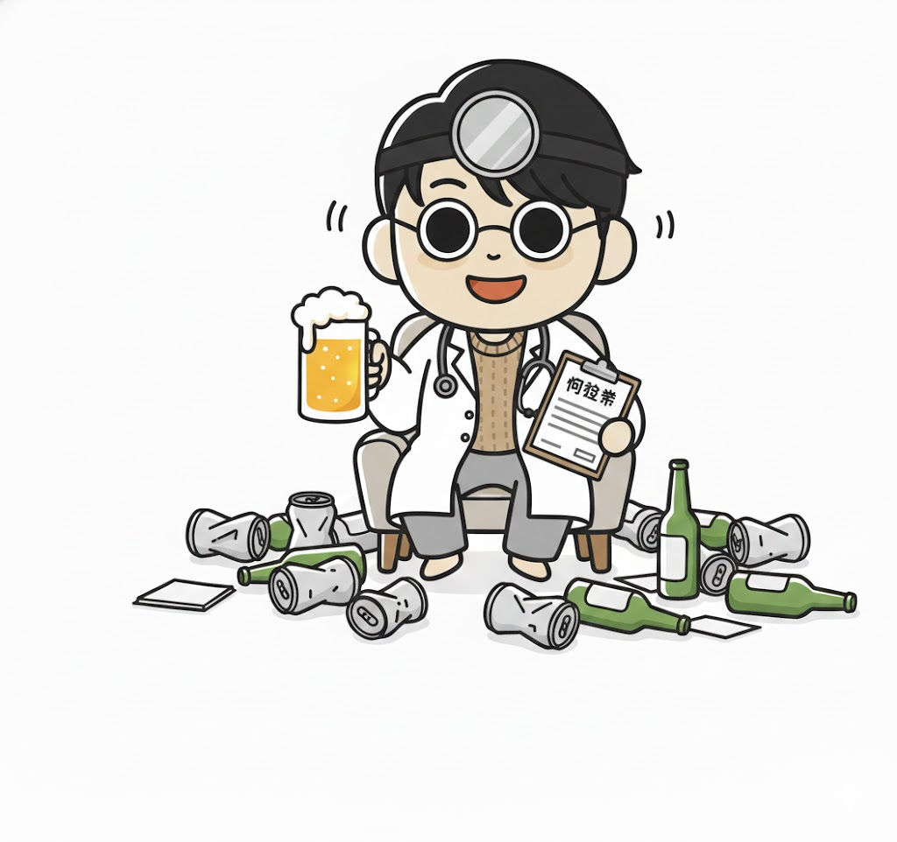

Your drunk personality is...

Silent listener, infinite capacity. You absorb every secret and confession with deep nods and no judgment. Iron stomach, zero gossip. The most trusted person in every room.
Core Traits: The Silence-Powered Listening Machine
You can drink a lot but you never want the spotlight. And yet you're far from cold — you feel genuine joy from hearing other people's stories. You read the emotions behind words with unsettling accuracy, and you transform the bar table into a healing counselling space without anyone quite noticing it's happening.
At a Night Out: The Late-Night Mobile Confessional
People are drawn to you like moths — anyone carrying something heavy will eventually drift over and unload. You don't give advice. You just nod deeply, drink steadily, and witness. The next day, those who confessed to you feel lighter. Meanwhile you are carrying the collected secrets of an entire friend group inside your head.
Strengths & Charm: Ultimate Empathy and Total Confidentiality
"I can tell you this" — that feeling people get around you is your superpower. Your secrets stay kept. Your sincerity earns absolute trust. You're not just a good listener. You're a soul-understander.
【Output Mode】
The weight of other people's lives builds up inside you. Let it out sometimes by talking about something you love, something you're excited about. Listeners have just as much right to speak as anyone.